After learning this unit, students will be able to
Humans are very much interested in knowing about atoms. Things around us are made up of atoms. A Greek Philosopher 'Democritus' in 400 BC believed that matter is made up of tiny indestructible units called atoms. Later, in 1803, John Dalton considered that elements consist of atoms, which are identical in nature. J J Thomson discovered cathode rays, known as electrons, experimentally and Goldstein discovered positive rays, which were named as protons by Rutherford. In 1932, James Chadwick discovered the charge less particles called neutrons. Presently, a large number of elementary particles like photon, meson, positron and neutrino have been discovered. In 1911, the British scientist, Ernest Rutherford explained that the mass of an atom is concentrated in its central part called Nucleus. You have already learnt about the atomic structure in the earlier classes.
In 1896, French physicist Henri Becquerel finished his research for the week and stored a certain amount of uranium compound away in a drawer for the week end. By chance, an unexposed photographic plate was also stored in the same drawer. After a week he returned and noticed that the film had been exposed to some radiation. He discovered that he could reproduce the effect whenever he placed uranium near a photographic film. Apparently, uranium radiated something that could affect a photographic plate. This phenomenon was called as Radioactivity. Uranium was identified to be a radioactive element.
Two years later, the Polish physicist Marie Curie and her husband Pierre Curie detected radioactivity in 'Pitchblende', a tiny black substance. They were not surprised at the radioactivity of pitchblende, which is known as an ore of uranium. Later, they discovered that the radiation was more intense from pure uranium. Also, it was found that the pitchblende had less concentration of uranium. They concluded that some other substance was present in pitchblende. After separating this new substance, they discovered that it had unknown chemical properties and it also emitted radiations spontaneously like uranium. They named this new substance as 'Radium'. The radioactive elements emit harmful radioactive radiations like alpha rays or beta rays or gamma rays.
The nucleus of some elements is unstable. Such nuclei undergo nuclear decay and get converted into more stable nuclei. During this nuclear reaction, these nuclei emit certain harmful radiations and elementary particles. The phenomenon of nuclear decay of certain elements with the emission of radiations like alpha, beta, and gamma rays is called 'radioactivity' and the elements, which undergo this phenomenon are called 'radioactive elements'.
The elements such as uranium and radium undergo radioactivity and emit the radiations on their own without any human intervention. This phenomenon of spontaneous emission of radiation from certain elements on their own is called 'natural radioactivity'.
The elements whose atomic number is more than 83 undergo spontaneous radioactivity. Example ; uranium, radium, Etcetera. There are only two elements, which have been identified as radioactive substances with atomic number less than 83. They are technetium (Tc) with atomic number 43 and promethium (Pm) with atomic number 61.
There have been 29 radioactive substances discovered so far. Most of them are rare earth metals and transition metals.
The phenomenon by which even light elements are made radioactive, by artificial or induced methods, is called 'artificial radioactivity' or 'man-made radioactivity'.
This kind of radioactivity was discovered by Irene Curie and Joliot in 1934. Artificial radioactivity is induced in certain lighter elements like boron, aluminium etc., by bombarding them with radiations such as 'alpha particles' emitted during the natural radioactivity of uranium. This also results in the emission of invisible radiations and elementary particles. During such a disintegration, the nucleus which undergoes disintegration is called 'parent nucleus' and that which is produced after the disintegration is called a 'daughter nucleus'. The particle, which is used to induce the artificial disintegration is termed as projectile and the particle which is produced after the disintegration is termed as ejected particle. When the projectile hits the parent nucleus, it is converted into an unstable nucleus, which in turn decays spontaneously emitting the daughter nucleus along with an ejected particle.
Table 6.1 Comparison between Natural and Artificial Radioactivity
S. No. |
Natural radioactivity |
Artificial radioactivity |
1 |
Emission of radiation due to self- disintegration of a nucleus. |
Emission of radiation due to disintegration of a nucleus through induced process. |
2 |
Alpha, beta and gamma radiations are emitted. |
Mostly elementary particles such as neutron, positron, etcetera… are emitted. |
3 |
It is a spontaneous process. |
It is an induced process. |
4 |
Exhibited by elements with atomic number more than83. |
Exhibited by elements with atomic number less than83. |
5 |
This cannot be controlled. |
This can be controlled. |
Activity 6.1
Using the periodic table, list out the radioactive elements. Also identify the name of the groups in which they are present.
If you denote the parent and daughter nuclei as X and Y respectively, then the nuclear disintegration is represented as follows: X (P, E) Y. Here, P and E represent the projectile particle and ejected particle respectively.
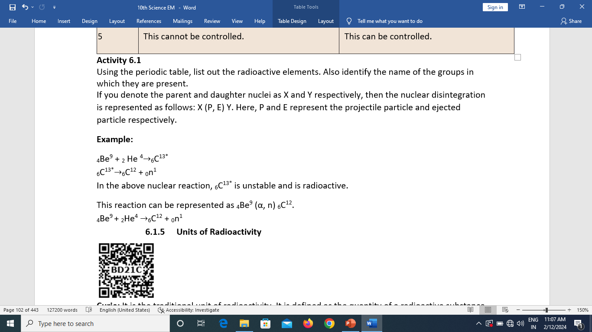
In the above nuclear reaction, 6 Carbon 13 is unstable and is radioactive.
This reaction can be represented as 4 Beryllium 9 (α, n) 6 Carbon 12.
4 Beryllium 9 + 2 helium 4 gives 6 carbon 12 + 1 neutron.
Curie: It is the traditional unit of radioactivity. It is defined as the quantity of a radioactive substance which undergoes 3.7 × 10 power 10 disintegrations in one second. This is actually close to the activity of 1 g of radium 226.
1 curie = 3.7 × ten power ten disintegrations per second.
Rutherford (Rd): It is another unit of radioactivity. It is defined as the quantity of a radioactive substance, which produces ten power of six disintegrations in one second.
1 Rutherford = ten power of six disintegrations per second.
Becquerel (Bq): The SI unit of radioactivity is becquerel. It is defined as the quantity of one disintegration per second.
Roentgen (R): It is the radiation exposure of γ and x-rays is measured by another unit called roentgen. One roentgen is defined as the quantity of radioactive substance which produces a charge of 2.58 × 10 power -4 coulomb in 1 kg of air under standard conditions of pressure, temperature and humidity.
When a radioactive nucleus undergoes radioactivity, it emits harmful radiations. These radiations are usually comprised of any of the three types of particles. They are alpha(α), beta (β) and gamma(γ) rays.
Uranium, named after the planet Uranus, was discovered by Martin Klaproth, a German chemist in a mineral called pitchblende.
These three particles possess certain similarities and dissimilarities in their properties as listed below in Table 6.2
Table 6.2 Properties of alpha, beta and gamma rays
Properties |
α rays |
β rays |
ᵧ rays |
What are they? |
Helium nucleus ( two helium four) consisting of two protons and two neutrons. |
They are electrons (minus 1 electron 0), basic elementary particle in all atoms. |
They are electromagnetic waves consisting of photons. |
Charge |
Positively charged particles. Charge of each alpha particle Is equal to plus two eletron |
Negatively charged particles. Charge of each beta particle = minus electron |
Neutral particles. Charge of each gamma particle = zero |
Ionizing power |
100 times greater than βrays and 10,000 times greater than γ rays |
Comparatively low |
Very less ionization power |
Penetrating power |
Low penetrating power (even stopped by a thick paper) |
Penetrating power is greater than that of α rays. They can penetrate through a thin metal foil. |
They have a very high penetrating power greater than that of β rays. They can penetrate through thick metal blocks. |
Effect of electric and magnetic field |
Deflected by both the fields. (In accordance with Fleming’s left-hand rule) |
Deflected by both the fields; but the direction of deflection is opposite to that for alpha rays (in accordance with Fleming’s left-hand rule) |
They are not deflected by both the fields. |
Speed |
Their speed ranges from 1by10 to 1by20 times the speed of light. |
Their speed can go up to 9 by10 times the speed of light. |
They travel with the speed of light. |
In 1913, Soddy and Fajan framed the displacement laws governing the daughter nucleus produced during an alpha and beta decay. They are stated below:
A nuclear reaction in which an unstable parent nucleus emits an alpha particle and forms a stable daughter nucleus, is called 'alpha decay'.
Example: Decay of uranium (Uranium 238) to thorium (Thorium 234) with the emission of an alpha particle.
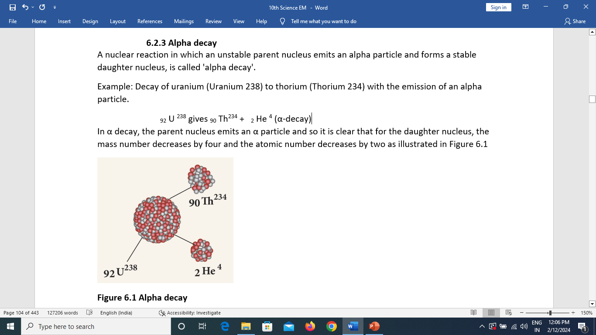
In α decay, the parent nucleus emits an α particle and so it is clear that for the daughter nucleus, the mass number decreases by four and the atomic number decreases by two as illustrated in Figure 6.1
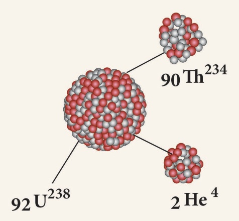
Figure 6.1 Alpha decay
A nuclear reaction, in which an unstable parent nucleus emits a beta particle and forms a stable daughter neuleus, is called 'beta decay'. Example.: Beta decay of phosphorous.
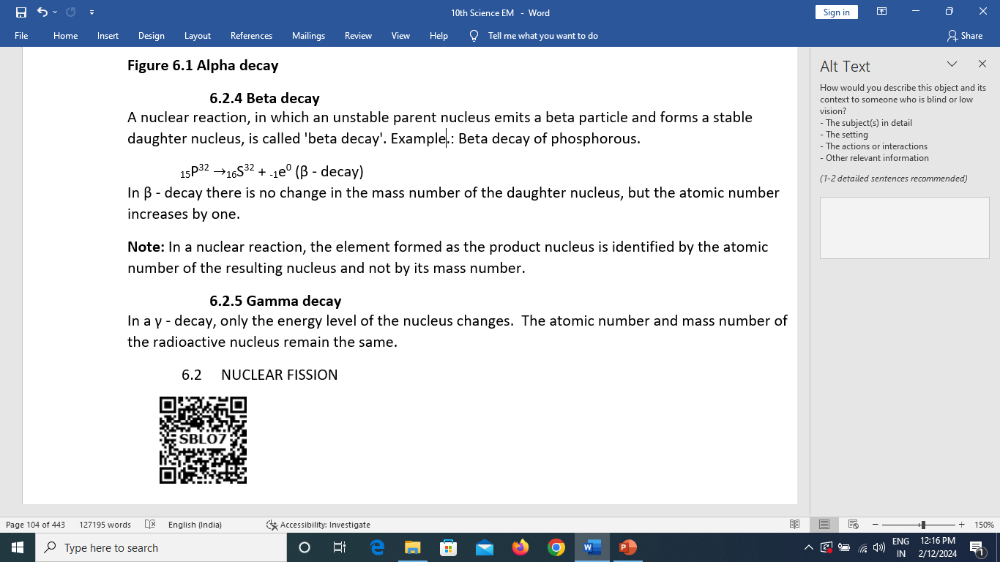
In β - decay there is no change in the mass number of the daughter nucleus, but the atomic number increases by one.
Note: In a nuclear reaction, the element formed as the product nucleus is identified by the atomic number of the resulting nucleus and not by its mass number.
In a γ - decay, only the energy level of the nucleus changes. The atomic number and mass number of the radioactive nucleus remain the same.
In 1939, German Scientist Otto Hahn and Strassman discovered that when a uranium nucleus is bombarded with a neutron, it breaks up into two smaller nuclei of comparable mass along with the emission of a few neutrons and energy. This process of breaking (splitting) up of a heavier nucleus into two smaller nuclei with the release of a large amount of energy and a few neutrons is called 'nuclear fission'. Example: Nuclear fission of a uranium nucleus (U235)
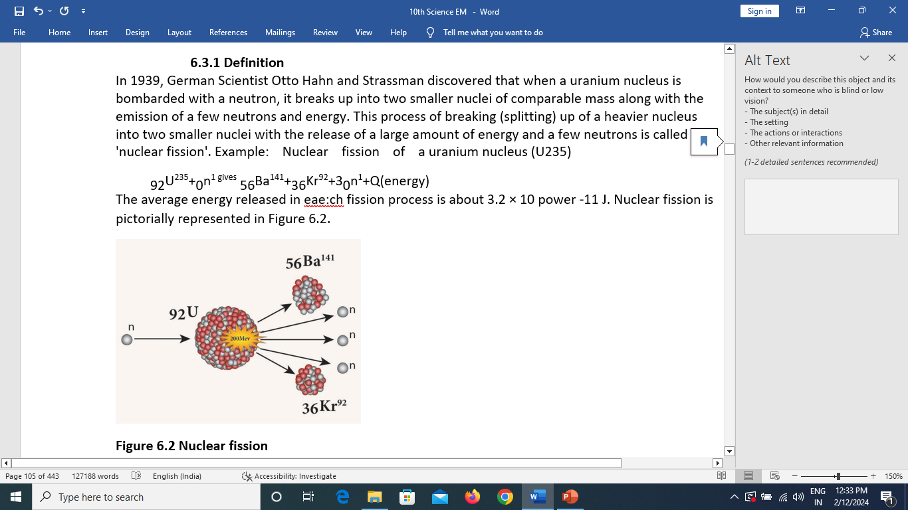
The average energy released in eae:ch fission process is about 3.2 × 10 power -11 Joule. Nuclear fission is pictorially represented in Figure 6.2.
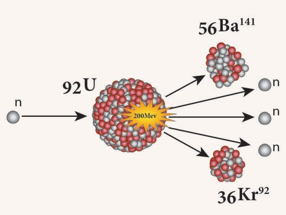
Figure 6.2 Nuclear fission
A fissionable material is a radioactive element, which undergoes fission in a sustained manner when it absorbs a neutron. It is also termed as 'fissile material'.
Example: Uranium 235, plutonium (plutonium 239 and Plutonium 241) All isotopes of uranium do not undergo nuclear fission when they absorb a neutron. For example, natural uranium consists of99.28 % of Uranium 92 235 and 0.72 percentage of Uranium 92 235 . Of these two, Uranium 238 does not undergo fission whereas Uranium 235 undergoes fission. Hence, Uranium 235 is a fissionable material and Uranium 238 is non- fissionable.
There are some radioactive elements, which can be converted into fissionable material. They are called as fertile materials. Example : Uranium-238, Thorium-232, Plutonium-240.
A uranium nucleus (U-235) when bombarded with a neutron undergoes fission producing three neutrons. These three neutrons in turn can cause fission in three other uranium nuclei present in the sample, thus producing nine neutrons. These nine neutrons in turn may produce twenty-seven neutrons and so on. This is known as 'chain reaction'. A chain reaction is a self- propagating process in which the number of neutrons goes on multiplying rapidly almost in a geometrical progression.
Two kinds of chain reactions are possible. They are: (One) controlled chain reaction and (Two)uncontrolled chain reaction.
In the controlled chain reaction, the number of neutrons released is maintained to be one. This is achieved by absorbing the extra neutrons with a neutron absorber leaving only one neutron to produce further fission. Thus, the reaction is sustained in a controlled manner. The energy released due to a controlled chain reaction can be utilized for constructive purposes. Controlled chain reaction is used in a nuclear reactor to produce energy in a sustained and controlled manner.
(b) Uncontrolled chain reaction
In the uncontrolled chain reaction, the number of neutrons multiplies indefinitely and causes fission in a large amount of the fissile material. This results in the release of a huge amount of energy within a fraction of a second. This kind of chain reaction is used in the atom bomb to produce an explosion. Figure 6.3 represents an uncontrolled chain reaction.
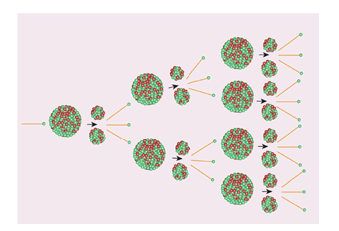
Figure 6.3 Uncontrolled chain reaction
6.3.4 Critical Mass
During a nuclear fission process, about 2 to 3 neutrons are released. But all these neutrons may not be available to produce further fission. Some of them may escape from the system, which is termed as 'leakage of neutrons' and some may be absorbed by the non-fissionable materials present in the system. These two factors lead to the loss of neutrons. To sustain the chain reaction, the rate of production of neutrons due to nuclear fission must be more than the rate of its loss. This can be achieved only when the size (That is mass) of the fissionable material is equal to a certain optimum value. This is known as 'critical mass'.
The minimum mass of a fissile material necessary to sustain the chain reaction is called' critical mass (mc)'. It depends on the nature, density and the size of the fissile material.
If the mass of the fissile material is less than the critical mass, it is termed as 'subcritical'. If the mass of the fissile material is more than the critical mass, it is termed as 'supercritical'.
Activity 6.2
Using beads make a chain reaction model
6.3.5 Atom bomb
The atom bomb is based on the principle of uncontrolled chain reaction. In an uncontrolled chain reaction, the number of neutrons and the number of fission reactions multiply almost in a geometrical progression. This releases a huge amount of energy in a very small-time interval and leads to an explosion.
Structure:
An atom bomb consists of a piece of fissile material whose mass is subcritical. This piece has a cylindrical void. It has a cylindrical fissile material which can fit into this void and its mass is also subcritical. When the bomb has to be exploded, this cylinder is injected into the void using a conventional explosive. Now, the two pieces of fissile material join to form the supercritical mass, which leads to an explosion. The structure of an atom bomb is shown in Figure 6.4
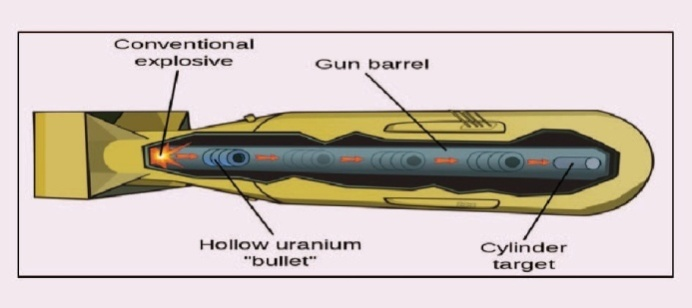
Figure 6.4 Atom bomb
During this explosion tremendous amount of energy in the form of heat, light and radiation is released. A region of very high temperature and pressure is formed in a fraction of a second along with the emission of hazardous radiation like γ rays, which adversely affect the living creatures. This type of atom bombs was exploded in 1945 at Hiroshima and Nagasaki in Japan during the World War II.
Do You Know?
Electron Volt it read as eV is the unit used in nuclear physics to measure the energy of small particles. It is nothing but the energy of one electron when it is accelerated using an electric potential of one volt.
1eV = 1.602 × 10 power -19 joule.
1 million electron volt = 1 MeV = 10 power 6 eV
(Mega electron volt)
The energy released in a nuclear fission process is about 200 MeV.
You have learnt that energy can be produced when a heavy nucleus is split up into two smaller nuclei. Similarly, energy can be produced when two lighter nuclei combine to form a heavier nucleus. This phenomenon is known as nuclear fusion.
The process in which two lighter nuclei combine to form a heavier nucleus is termed as 'nuclear fusion'.
Example 1 Hydrogen 2 + 1 Hydrogen 2 2 helium 4 + Q (Energy)
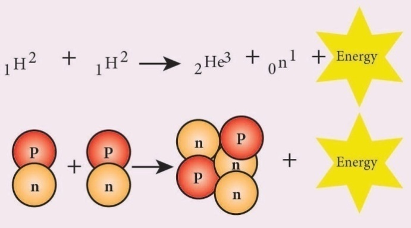
Figure 6.5 Nuclear fusion
Here, 1H2 represents an isotope of hydrogen known as 'deuterium'. The average energy released in each fusion reaction is about 3.84 × 10 power -12 Joule. Figure 6.5 represents this.
The mass of the daughter nucleus formed during a nuclear reaction (fission and fusion) is lesser than the sum of the masses of the two parent nuclei. This difference in mass is called mass defect. This mass is converted into energy, according to the mass-energy equivalence. This concept of mass-energy equivalence was proposed by Einstein in 1905. It stated that mass can be converted into energy and vice versa. The relation between mass and energy proposed by Einstein is
E = mc power 2 where c is the velocity of light in vacuum and is equal to 3 × 10 power of 8 .
Do you Know
The nuclear bomb that was dropped in Hiroshima during World War II was called as
'Little boy'. It was a gun-type bomb which used a uranium core. The bomb, which was subsequently dropped over Nagasaki was called as 'Fat man'. It was an explosion type bomb, which used a plutonium core.
Earth’s atmosphere contains a small trace of hydrogen. If nuclear fusion is a spontaneous process at normal temperature and pressure, then a number of fusion processes would happen in the atmosphere which may lead to explosions. But we do not encounter any such explosions. Can you explain why?
The answer is that nuclear fusion can take place only under certain conditions.
Nuclear fusion is possible only at an extremely high temperature of the order of 10 power of 7 to
10 power of 9 Kelvin and a high pressure to push the hydrogen nuclei closer to fuse with each other. Hence, it is named as 'Thermonuclear reaction'.
Do you know
Nuclear fusion is the combination of two lighter nuclei. The charge of both nuclei is positive. According to electrostatic theory, when they come closer, they tend to repel each other. This repulsive force will be overcome by the kinetic energy of the nuclei at higher temperature of the order of 10 power of 7 to 10 power of 9 Kelvin.
The stars like our Sun emit a large amount of energy in the form of light and heat. This energy is termed as the stellar energy. Where does this high energy come from? All stars contain a large amount of hydrogen. The surface temperature of the stars is very high which is sufficient to induce fusion of the hydrogen nuclei.
Fusion reaction that takes place in the cores of the Sun and other stars results in an enormous amount of energy, which is called as 'stellar energy. Thus, nuclear fusion or thermonuclear reaction is the source of light and heat energy in the Sun and other stars.
Hydrogen bomb is based on the principle of nuclear fusion. A hydrogen bomb is always designed to have an inbuilt atom bomb which creates the high temperature and pressure required for fusion when it explodes. Then, fusion takes place in the hydrogen core and leads to the release of a very large amount of energy in an uncontrolled manner. The energy released in a hydrogen bomb (or fusion bomb) is much higher than that released in an atom bomb (or fission bomb).
Table 6.3 Features of Nuclear fission and nuclear fusion
Serial Number |
NUCLEAR FISSION |
NUCLEAR FUSION |
1 |
The process of breaking up (splitting) of a heavy nucleus in to two smaller nuclei is called 'nuclear fission'. |
Nuclear fusion is the combination of two lighter nuclei to form a heavier nucleus. |
2 |
Can be performed at room temperature. |
Extremely high temperature and pressure Is needed. |
3 |
Alpha, beta and gamma radiations are emitted. |
Alpha rays, positrons, and neutrinos are emitted. |
4 |
Fission leads to emission of gamma radiation. This triggers the mutation in the human gene and causes genetic transform diseases. |
Only light and heat energy is emitted. |
Do you know
Sun fuses about 620 million metric tons of hydrogen each second and radiates about
3.8 × 10 power of 26 joule s energy per second. When this energy is radiated towards the Earth, it decreases in its intensity. When it reaches the Earth, its value is about 1.4 kilo joule per unit area in unit time.
Many radio isotopes can be obtained from radioactivity. These radio isotopes have found wide variety of applications in the fields of medicine, agriculture, industry and archaeological research.
6.5.1 .Agriculture
The radio isotope of phosphorous (Phosphorous -32) helps to increase the productivity of crops.
The radiations from the radio isotopes can be used to kill the insects and parasites and prevent the wastage of agricultural products. Certain perishable cereals exposed to radiations remain fresh beyond their normal life, enhancing the storage time. Very small doses of radiation prevent sprouting and spoilage of onions, potatoes and gram.
6.5.2. Medicine
Medical applications of radio isotopes can be divided into two parts:
First ) Diagnosis , Second ) Therapy .
Radio isotopes are used as tracers to diagnose the nature of circulatory disorders of blood, defects of bone metabolism, to locate tumours, etc. Some of the radio isotopes which are used as tracers are: hydrogen, carbon, nitrogen, sulphur, edcetera.
In industries, radioactive isotopes are used as tracers to detect any manufacturing defects such as cracks and leaks. Packaging faults can also be identified through radio activity. Gauges, which have radioactive sources are used in many industries to check the level of gases, liquids and solids.
6.5.4 Archaeological research
Using the technique of radio carbon dating, the age of the Earth, fossils, old paintings and monuments can be determined. In radio carbon dating, the existing amount of radiocarbon is determined, and this gives an estimate about the age of these things.
In day-to-day life, you do receive some natural radiation from the Sun. The radioactive elements present in the soil and rocks, the household appliances like television, microwave ovens, cell phones and the X-rays used in hospitals. These radiations do not produce any severe effects as they are very low in intensity.
The second source of radiation exposure is man-made. These are due to nuclear reactors and during the testing of the nuclear devices in the atmosphere or in the ground.
Improper and careless handling of radioactive materials release harmful radiations in our environment. These radiations are very harmful to the human body. A person who is exposed to radiations very closely or for a longer duration, is at a greater health risk and can be affected genetically.
Do you Know
How old is our mother Earth? Any guess?? It is nearly 4.54 × 10 power of 9 years (around 45 Crore 40 lakh years). Wow!!
6.6.1. Permitted range
The International Commission on Radiological Protection (ICRP) has recommended certain maximum permissible exposure limits to radiation that is believed to be safe without producing any appreciable injury to a person. Safe limit of overall exposure to radiation is given as 20 milli sievert per year. In terms of roentgen, the safe limit of receiving the radiation is about 100 milli Roentgen per week. If the exposure is 100 Roentgen, it may cause fatal diseases like leukaemia (death of red blood corpuscle in the blood) or cancer. When the body is exposed to about 600 Roentgen, it leads to death.
Do you Know
Dosimeter is a device used to detect the levels of exposure to an ionizing radiation. It is frequently used in the environments where exposure to radiation may occur such as nuclear power plants and medical imaging facilities. Pocket dosimeter is used to provide the wearer with an immediate reading of his/her exposure to X-rays and γ rays.
Preventive measures
Figure. 6.6 Lead coated aprons model.
A Nuclear reactor is a device in which the nuclear fission reaction takes place in a self-sustained and controlled manner to produce electricity. The first nuclear reactor was built in 1942 at Chicago, USA.
6.7.1 Types of nuclear reactors
Breeder reactor, fast breeder reactor, pressurized water reactor, pressurized heavy water reactor, boiling water reactor, water- cooled reactor, gas-cooled reactor, fusion reactor and thermal reactor are some types of nuclear reactors, which are used in different places world-wide.
6.7.2 Components of a nuclear reactors
The essential components of a nuclear reactor are (1) fuel, (2) moderator, (3) control rod, (4) coolant and (5) protection wall.
First is . Fuel: A fissile material is used as the fuel. The commonly used fuel material is uranium.
Second one is, Moderator: A moderator is used to slow down the high energy neutrons to provide slow neutrons. Graphite and heavy water are the commonly used moderators.
Third one is , Control rod: Control rods are used to control the number of neutrons in order to have sustained chain reaction. Mostly boron or cadmium rods are used as control rods. They absorb the neutrons.
Fourth one is , Coolant: A coolant is used to remove the heat produced in the reactor core, to produce steam. This steam is used to run a turbine in order to produce electricity. Water, air and helium are some of the coolants.
Last one is , Protection wall: A thick concrete lead wall is built around the nuclear reactor in order to prevent the harmful radiations from escaping into the environment.
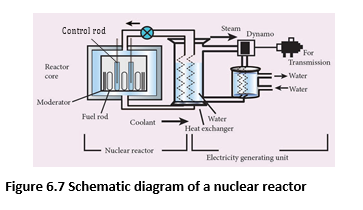
6.7.3. Uses of a nuclear reactor
6.7.4. Nuclear power plants in India
IndianAtomicEnergyCommission (AEC) was established in August 1948 by the Department of Indian Scientific Research committee at Bombay (now Mumbai) in Maharashtra. It is the nodal agency for all the research done in the field of atomic energy. Dr.Homi Jahangir Bhaba was the first chairman of Indian Atomic Energy Commission. Now, it is known as Bhaba Atomic Research Centre (BARC).
Nuclear power is the fifth largest source of power in India. Tarapur Atomic Power Station is India’s first nuclear power station. Now, there are a total of seven power stations, one each in Maharashtra, Rajasthan, Gujarat, Uttar Pradesh and two in Tamil Nadu. In Tamilnadan, we have nuclear power stations in Kalpakkam and Kudankulam. Apsara was the first nuclear reactor built in India and Asia. Now, there are 22 nuclear reactors which are operating in India. Some other operating reactors are
Solved problem 6.1
Identify A, B, C, and D from the following nuclear reactions.
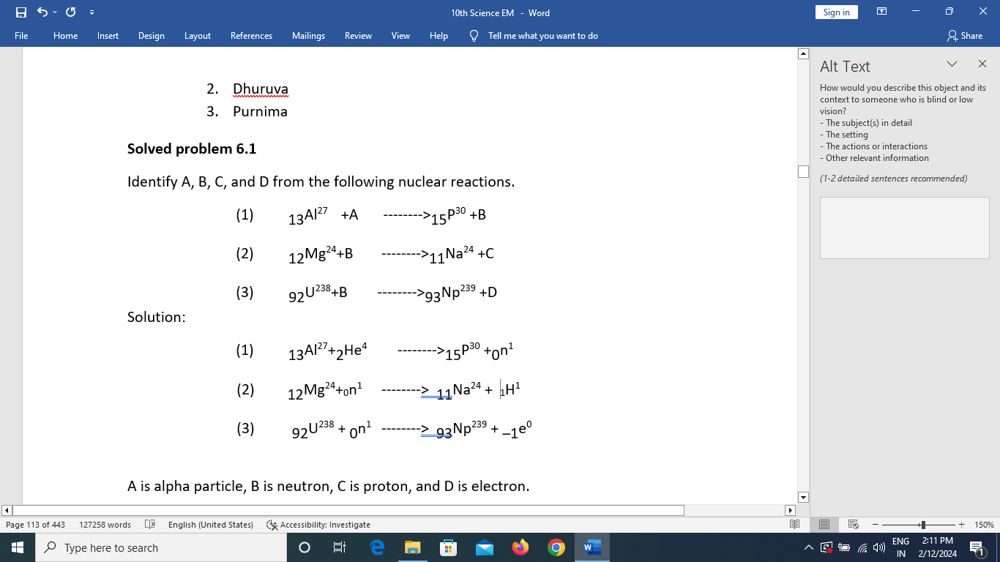
A is alpha particle, B is neutron, C is proton, and D is electron.
Solved problem 6.2
A radon specimen emits radiation of 3.7 × 10 power 3 GBq per second. Convert this disintegration in terms of curie. (One curie = 3.7 × 10 power 10 disintegration per second)
1 Becquerel is equal to one disintegration per second one curie = 3.7 × 10 power 10 Becquerel
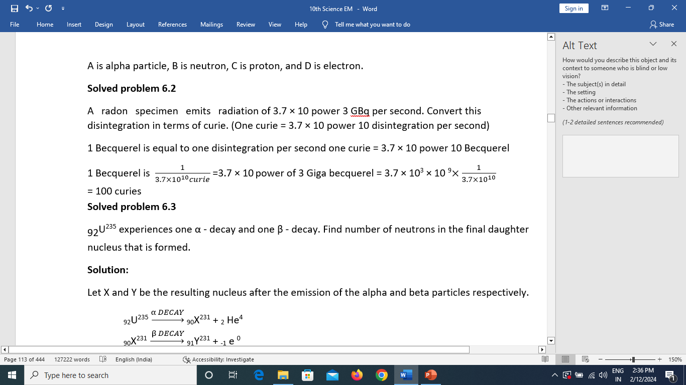
Solved problem:6.3
Uranium 92 235 experiences one α - decay and one β - decay. Find number of neutrons in the final daughter nucleus that is formed.
Solution:
Let X and Y be the resulting nucleus after the emission of the alpha and beta particles respectively.
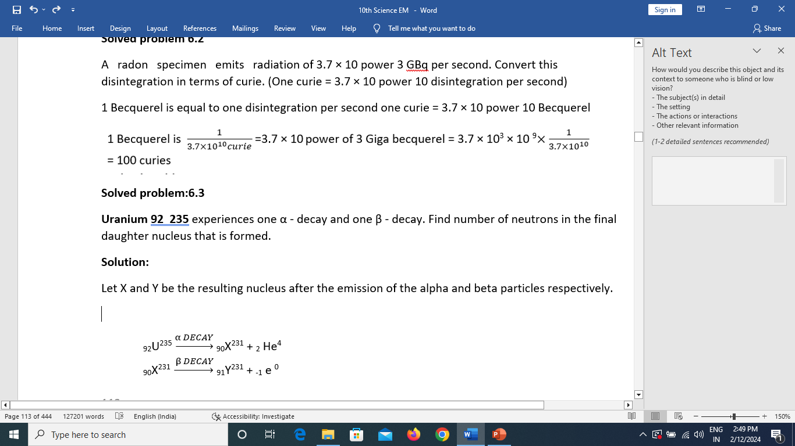
Number of neutrons is deduction of Atomic number from mass Number
= 231 – 91 =140
Solved problem 6.4
Calculate the amount of energy released when a radioactive substance undergoes fusion and results in a mass defect of 2 kg.
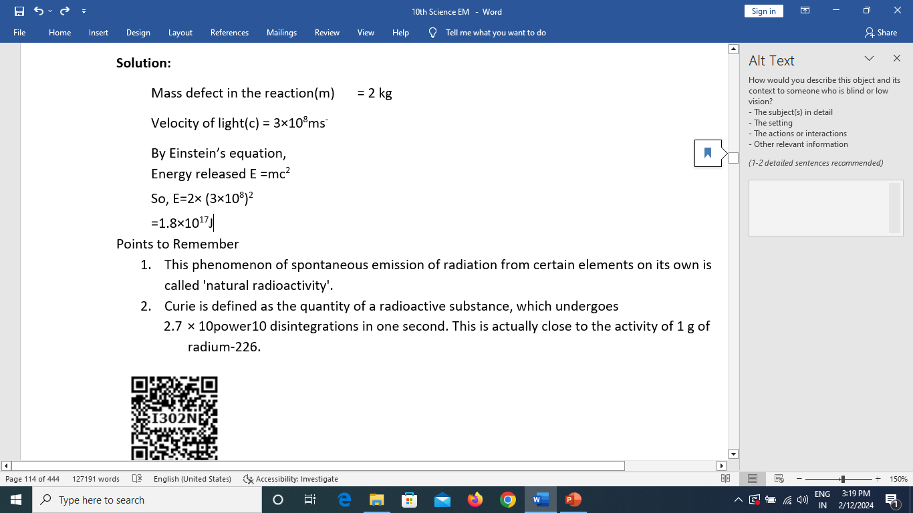
10 power 6 disintegrations in one second. 1 Rutherford is 10 power 6 disintegrations per second.